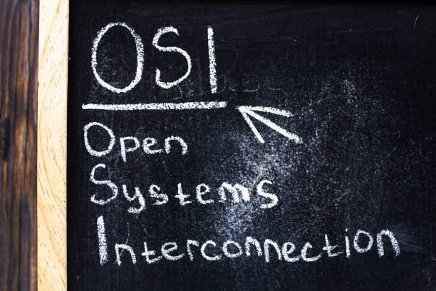

نموذج نظري وضعته منظمة ISO لتوحيد الطريقة التي تتواصل بها أنظمة الكمبيوتر المختلفة عبر الشبكات.
الهدف: يهدف النموذج إلى تقسيم عملية الاتصال عبر الشبكة إلى سبع طبقات، بحيث تؤدي كل طبقة
وظيفة محددة وتتعامل مع الطبقات المجاورة لها فقط. هذا يسهل تصميم الشبكات، ويسهّل التوافق بين الأجهزة والبرامج
من شركات مختلفة.

Physical Layer
تنقل البيانات على شكل إشارات كهربائية أو ضوئية. هي الطبقة المسؤولة عن الاتصال الفعلي بين الأجهزة.
المهام: إرسال واستقبال الـ Bits.
أمثلة: Ethernet cables, Fiber optics, USB.
أجهزة: Hubs, Repeaters.
Data Link Layer
تتعامل مع الإرسال بين الأجهزة داخل نفس الشبكة المحلية، وتقوم بتقسيم البيانات إلى إطارات (Frames).
المهام: التحكم في الوصول للوسط، واكتشاف وتصحيح الأخطاء.
أمثلة: Ethernet, Wi-Fi, MAC Addressing.
أجهزة: Switches, Network cards.
Network Layer
تتعامل مع عنونة وتوجيه البيانات لتنتقل من شبكة إلى شبكة.
المهام: التوجيه (Routing) وتحديد المسار.
أمثلة: IP, ICMP, Routers.
الوحدات: Packets.
Transport Layer
تضمن تسليم البيانات كاملة وصحيحة من المصدر إلى الوجهة.
المهام: التحكم في الأخطاء، التجزئة، إعادة التجميع.
بروتوكولات: TCP (موثوق), UDP (غير موثوق).
الوحدات: Segments / Datagrams.
Session Layer
تنشئ وتدير الجلسات بين التطبيقات على الأجهزة المختلفة.
المهام: بدء الجلسات، إدارتها، وإنهاؤها.
أمثلة: NetBIOS, RPC, PPTP.
Presentation Layer
تحول البيانات من صيغة لأخرى، وتقوم بالتشفير أو الضغط حسب الحاجة.
المهام: التشفير، فك التشفير، التحويل بين الصيغ.
أمثلة: SSL/TLS, JPEG, MPEG.
Application Layer
الطبقة الأقرب للمستخدم، وهي المسؤولة عن توفير واجهة استخدام لخدمات الشبكة.
المهام: تمكين التطبيقات من التفاعل مع الشبكة.
أمثلة: HTTP, FTP, DNS, SMTP.
أجهزة/برمجيات: المتصفحات، برامج البريد، تطبيقات الشبكات.